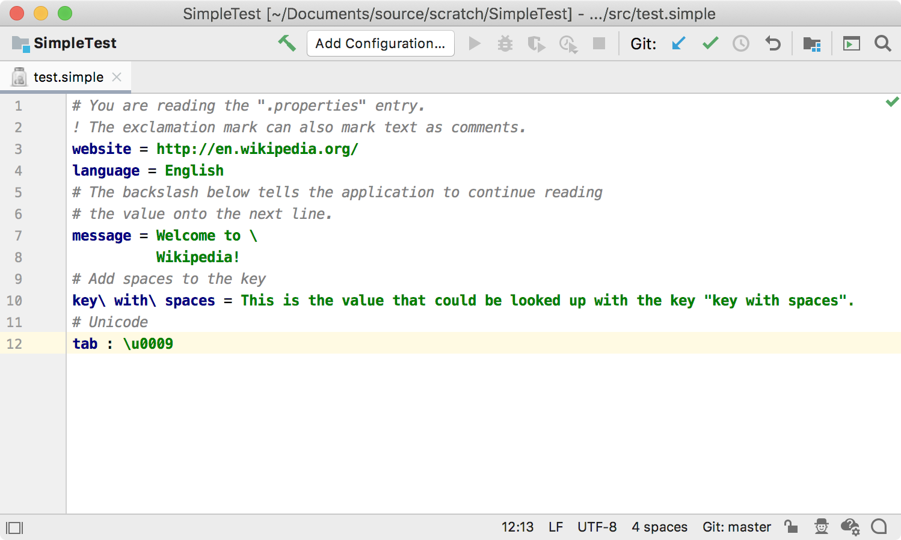
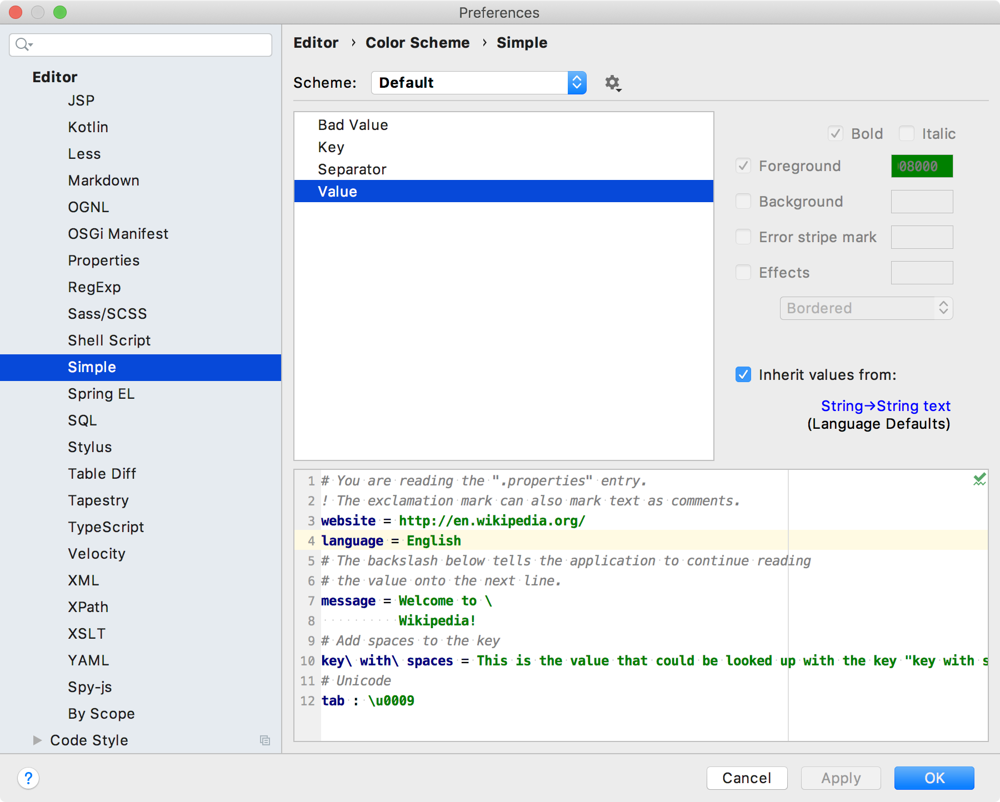

5. Syntax Highlighter and Color Settings Page
The first level of syntax highlighting is based on the lexer output, and is provided by SyntaxHighlighter.
A plugin can also define color settings based on ColorSettingPage so the user can configure highlight colors.
The SimpleSyntaxHighlighter, SimpleSyntaxHighlighterFactory, and SimpleColorSettingsPage discussed on this page are demonstrated in the simple_language_plugin code sample.
5.1. Define a Syntax Highlighter
The Simple Language syntax highlighter class extends SyntaxHighlighterBase.
As recommended in Color Scheme Management, the Simple Language highlighting text attributes are specified as a dependency on one of standard Intellij Platform keys.
For the Simple Language, define only one scheme.
// Copyright 2000-2020 JetBrains s.r.o. and other contributors. Use of this source code is governed by the Apache 2.0 license that can be found in the LICENSE file.
package org.intellij.sdk.language;
import com.intellij.lexer.Lexer;
import com.intellij.openapi.editor.*;
import com.intellij.openapi.editor.colors.TextAttributesKey;
import com.intellij.openapi.fileTypes.SyntaxHighlighterBase;
import com.intellij.psi.TokenType;
import com.intellij.psi.tree.IElementType;
import org.intellij.sdk.language.psi.SimpleTypes;
import org.jetbrains.annotations.NotNull;
import static com.intellij.openapi.editor.colors.TextAttributesKey.createTextAttributesKey;
public class SimpleSyntaxHighlighter extends SyntaxHighlighterBase {
public static final TextAttributesKey SEPARATOR =
createTextAttributesKey("SIMPLE_SEPARATOR", DefaultLanguageHighlighterColors.OPERATION_SIGN);
public static final TextAttributesKey KEY =
createTextAttributesKey("SIMPLE_KEY", DefaultLanguageHighlighterColors.KEYWORD);
public static final TextAttributesKey VALUE =
createTextAttributesKey("SIMPLE_VALUE", DefaultLanguageHighlighterColors.STRING);
public static final TextAttributesKey COMMENT =
createTextAttributesKey("SIMPLE_COMMENT", DefaultLanguageHighlighterColors.LINE_COMMENT);
public static final TextAttributesKey BAD_CHARACTER =
createTextAttributesKey("SIMPLE_BAD_CHARACTER", HighlighterColors.BAD_CHARACTER);
private static final TextAttributesKey[] BAD_CHAR_KEYS = new TextAttributesKey[]{BAD_CHARACTER};
private static final TextAttributesKey[] SEPARATOR_KEYS = new TextAttributesKey[]{SEPARATOR};
private static final TextAttributesKey[] KEY_KEYS = new TextAttributesKey[]{KEY};
private static final TextAttributesKey[] VALUE_KEYS = new TextAttributesKey[]{VALUE};
private static final TextAttributesKey[] COMMENT_KEYS = new TextAttributesKey[]{COMMENT};
private static final TextAttributesKey[] EMPTY_KEYS = new TextAttributesKey[0];
@NotNull
@Override
public Lexer getHighlightingLexer() {
return new SimpleLexerAdapter();
}
@NotNull
@Override
public TextAttributesKey[] getTokenHighlights(IElementType tokenType) {
if (tokenType.equals(SimpleTypes.SEPARATOR)) {
return SEPARATOR_KEYS;
} else if (tokenType.equals(SimpleTypes.KEY)) {
return KEY_KEYS;
} else if (tokenType.equals(SimpleTypes.VALUE)) {
return VALUE_KEYS;
} else if (tokenType.equals(SimpleTypes.COMMENT)) {
return COMMENT_KEYS;
} else if (tokenType.equals(TokenType.BAD_CHARACTER)) {
return BAD_CHAR_KEYS;
} else {
return EMPTY_KEYS;
}
}
}
5.2. Define a Syntax Highlighter Factory
The factory provides a standard way for the IntelliJ Platform to instantiate the syntax highlighter for Simple Language files.
Here, SimpleSyntaxHighlighterFactory subclasses SyntaxHighlighterFactory.
// Copyright 2000-2020 JetBrains s.r.o. and other contributors. Use of this source code is governed by the Apache 2.0 license that can be found in the LICENSE file.
package org.intellij.sdk.language;
import com.intellij.openapi.fileTypes.*;
import com.intellij.openapi.project.Project;
import com.intellij.openapi.vfs.VirtualFile;
import org.jetbrains.annotations.NotNull;
public class SimpleSyntaxHighlighterFactory extends SyntaxHighlighterFactory {
@NotNull
@Override
public SyntaxHighlighter getSyntaxHighlighter(Project project, VirtualFile virtualFile) {
return new SimpleSyntaxHighlighter();
}
}
5.3. Register the Syntax Highlighter Factory
Register the factory with the IntelliJ Platform in the plugin configuration file using the com.intellij.lang.syntaxHighlighterFactory extension point.
<extensions defaultExtensionNs="com.intellij">
<lang.syntaxHighlighterFactory language="Simple"
implementationClass="org.intellij.sdk.language.SimpleSyntaxHighlighterFactory"/>
</extensions>
5.4. Run the Project
Open the example Simple Language properties file (test.simple) in the IDE Development Instance.
The colors for Simple Language Key, Separator, and Value highlighting default to the IDE Language Defaults for Keyword, Braces, Operators, and Strings, respectively.

5.5. Define a Color Settings Page
The color settings page adds the ability for users to customize color settings for the highlighting in Simple Language files.
The SimpleColorSettingsPage implements ColorSettingsPage.
// Copyright 2000-2020 JetBrains s.r.o. and other contributors. Use of this source code is governed by the Apache 2.0 license that can be found in the LICENSE file.
package org.intellij.sdk.language;
import com.intellij.openapi.editor.colors.TextAttributesKey;
import com.intellij.openapi.fileTypes.SyntaxHighlighter;
import com.intellij.openapi.options.colors.*;
import org.jetbrains.annotations.*;
import javax.swing.*;
import java.util.Map;
public class SimpleColorSettingsPage implements ColorSettingsPage {
private static final AttributesDescriptor[] DESCRIPTORS = new AttributesDescriptor[]{
new AttributesDescriptor("Key", SimpleSyntaxHighlighter.KEY),
new AttributesDescriptor("Separator", SimpleSyntaxHighlighter.SEPARATOR),
new AttributesDescriptor("Value", SimpleSyntaxHighlighter.VALUE),
new AttributesDescriptor("Bad Value", SimpleSyntaxHighlighter.BAD_CHARACTER)
};
@Nullable
@Override
public Icon getIcon() {
return SimpleIcons.FILE;
}
@NotNull
@Override
public SyntaxHighlighter getHighlighter() {
return new SimpleSyntaxHighlighter();
}
@NotNull
@Override
public String getDemoText() {
return "# You are reading the \".properties\" entry.\n" +
"! The exclamation mark can also mark text as comments.\n" +
"website = http://en.wikipedia.org/\n" +
"language = English\n" +
"# The backslash below tells the application to continue reading\n" +
"# the value onto the next line.\n" +
"message = Welcome to \\\n" +
" Wikipedia!\n" +
"# Add spaces to the key\n" +
"key\\ with\\ spaces = This is the value that could be looked up with the key \"key with spaces\".\n" +
"# Unicode\n" +
"tab : \\u0009";
}
@Nullable
@Override
public Map<String, TextAttributesKey> getAdditionalHighlightingTagToDescriptorMap() {
return null;
}
@NotNull
@Override
public AttributesDescriptor[] getAttributeDescriptors() {
return DESCRIPTORS;
}
@NotNull
@Override
public ColorDescriptor[] getColorDescriptors() {
return ColorDescriptor.EMPTY_ARRAY;
}
@NotNull
@Override
public String getDisplayName() {
return "Simple";
}
}
5.6. Register the Color Settings Page
Register the Simple Language color settings page with the IntelliJ Platform in the plugin configuration file using the com.intellij.colorSettingsPage extension point.
<extensions defaultExtensionNs="com.intellij">
<colorSettingsPage implementation="org.intellij.sdk.language.SimpleColorSettingsPage"/>
</extensions>
5.7. Run the project
In the IDE Development Instance, open the Simple Language highlight settings page: Preferences/Settings | Editor | Color Scheme | Simple. Each color initially inherits from a Language Defaults value.
